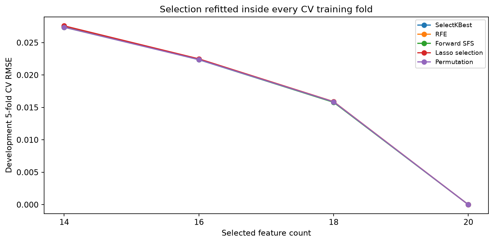
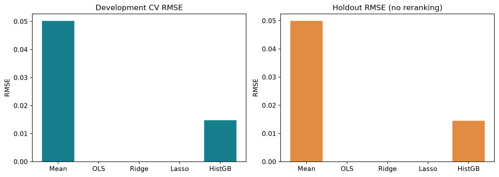
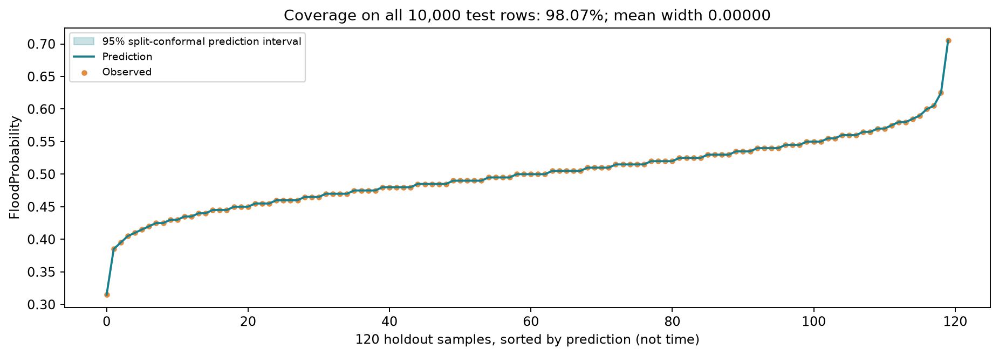
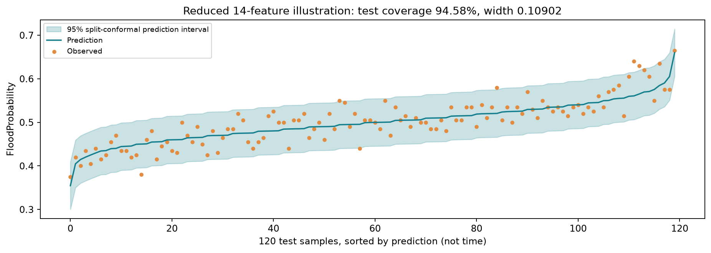
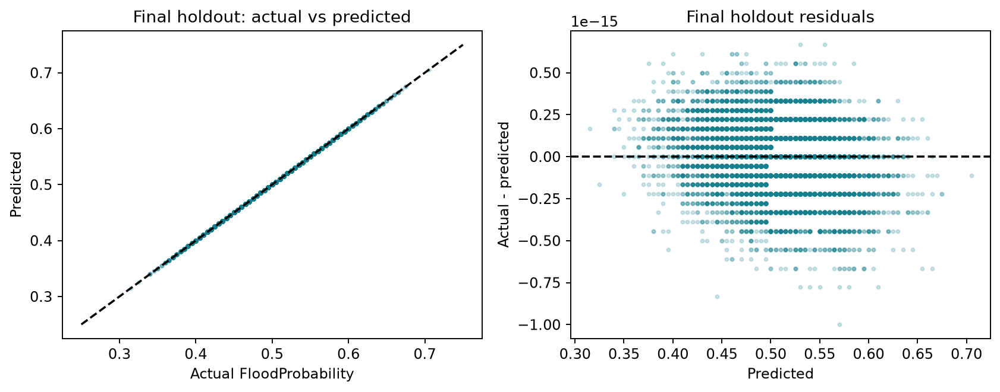
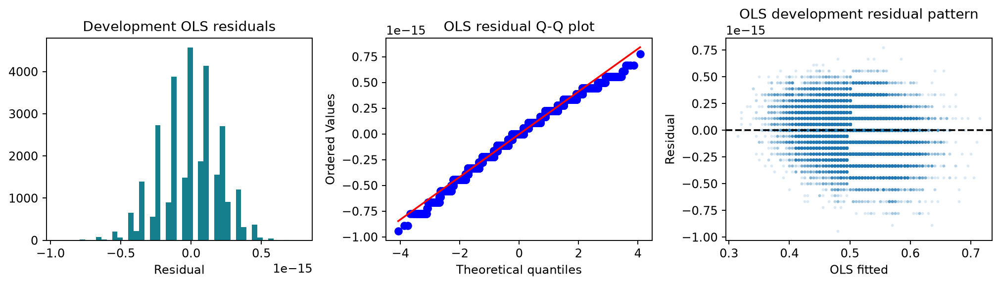

選擇 Problem 與資料集
下拉切換兩種回歸問題。也可上傳自己的 CSV，在本頁選擇數值目標與輸入特徵。
任意 Dataset：上傳 CSV 試做線性回歸
選一份含欄名的 CSV，挑選數值型目標欄與數值型特徵，網站會以固定種子切分 80% 訓練、20% 測試並顯示評估結果。
尚未選擇資料集。
目前支援有標題列的 CSV、數值型目標與數值型特徵；空白或非數值列會略過。類別欄位需先轉成數值編碼。自訂資料分析是教學預覽，不會改動正式 HW2 模型與報告。
資料與實驗設計
50,000 筆資料：開發集 30,000／校準集 10,000／測試集 10,000。固定種子 42，特徵選擇與調參都限制在開發資料。
重要發現：此版本的目標幾乎等於 20 個特徵總和 × 0.005，因此完整線性模型的 R² 接近 1。這反映資料生成結構，不能當作真實洪水預測能力的證據。
來源：Kaggle Flood Prediction Dataset · CC0（上傳頁面標示）。原始外部來源、蒐集方法與地理覆蓋不明，合成性質未獨立驗證。
完整 20 特徵方案實際使用相同 OLS，並列最佳。Ridge / Lasso 的 Adjusted R² 以名目特徵數計算，不能視為有效自由度調整。
特徵選擇與模型比較

刪除特徵會遺失生成公式的一部分；完整模型最好是合理的實驗結果。
線性模型與非線性對照

HistGradientBoosting 僅為相同資料與切分的對照，不參與主要線性模型選擇。
單筆情境預測
輸入為資料集分數，未提供可對應的真實量測單位。
模型方程式
係數由 Python 訓練後轉回原始尺度匯出；網頁不重新訓練模型。
95% 預測區間
Split conformal：模型只用開發集訓練，校準集絕對殘差的第 9,501 小值決定半寬。交換性假設下為邊際涵蓋率，並非每個情境皆保證 95%。
完整模型

完整模型殘差僅為浮點數誤差，區間幾乎退化成線；不能解讀成真實風險沒有不確定性。
14 特徵模型：區間示範

保留測試集：預測與殘差

回歸假設診斷

依開發集 CV MSE 排序，測試 MSE 不參與排名。點選列可載入該模型。
| 方案 | k | CV MSE | Test MSE | Test RMSE | Test R² |
|---|
CRISP-DM 六階段與作業進度
分析已完成。NotebookLM 研究摘要已由學生提供並核對；完整繳交狀態以報告及 submission_status.json 為準。